Last updated: 2022-04-07
Checks: 7 0
Knit directory:
Fetal-Gene-Program-snRNAseq/
This reproducible R Markdown analysis was created with workflowr (version 1.7.0). The Checks tab describes the reproducibility checks that were applied when the results were created. The Past versions tab lists the development history.
Great! Since the R Markdown file has been committed to the Git repository, you know the exact version of the code that produced these results.
Great job! The global environment was empty. Objects defined in the global environment can affect the analysis in your R Markdown file in unknown ways. For reproduciblity it’s best to always run the code in an empty environment.
The command set.seed(20220406) was run prior to running
the code in the R Markdown file. Setting a seed ensures that any results
that rely on randomness, e.g. subsampling or permutations, are
reproducible.
Great job! Recording the operating system, R version, and package versions is critical for reproducibility.
Nice! There were no cached chunks for this analysis, so you can be confident that you successfully produced the results during this run.
Great job! Using relative paths to the files within your workflowr project makes it easier to run your code on other machines.
Great! You are using Git for version control. Tracking code development and connecting the code version to the results is critical for reproducibility.
The results in this page were generated with repository version 78db7d6. See the Past versions tab to see a history of the changes made to the R Markdown and HTML files.
Note that you need to be careful to ensure that all relevant files for
the analysis have been committed to Git prior to generating the results
(you can use wflow_publish or
wflow_git_commit). workflowr only checks the R Markdown
file, but you know if there are other scripts or data files that it
depends on. Below is the status of the Git repository when the results
were generated:
working directory clean
Note that any generated files, e.g. HTML, png, CSS, etc., are not included in this status report because it is ok for generated content to have uncommitted changes.
These are the previous versions of the repository in which changes were
made to the R Markdown (analysis/01-QualityControl.Rmd) and
HTML (docs/01-QualityControl.html) files. If you’ve
configured a remote Git repository (see ?wflow_git_remote),
click on the hyperlinks in the table below to view the files as they
were in that past version.
| File | Version | Author | Date | Message |
|---|---|---|---|---|
| Rmd | 78db7d6 | neda-mehdiabadi | 2022-04-07 | wflow_publish(c("analysis/Rmd", "data/txt", "data/README.md", |
The first step of the analysis is to perform quality control of the cells to make sure that low quality cells are removed prior to further analysis.
Loading required package: limmaLoading required package: AnnotationDbiLoading required package: stats4Loading required package: BiocGenerics
Attaching package: 'BiocGenerics'The following object is masked from 'package:limma':
plotMAThe following objects are masked from 'package:stats':
IQR, mad, sd, var, xtabsThe following objects are masked from 'package:base':
anyDuplicated, append, as.data.frame, basename, cbind, colnames,
dirname, do.call, duplicated, eval, evalq, Filter, Find, get, grep,
grepl, intersect, is.unsorted, lapply, Map, mapply, match, mget,
order, paste, pmax, pmax.int, pmin, pmin.int, Position, rank,
rbind, Reduce, rownames, sapply, setdiff, sort, table, tapply,
union, unique, unsplit, which.max, which.minLoading required package: BiobaseWelcome to Bioconductor
Vignettes contain introductory material; view with
'browseVignettes()'. To cite Bioconductor, see
'citation("Biobase")', and for packages 'citation("pkgname")'.Loading required package: IRangesLoading required package: S4Vectors
Attaching package: 'S4Vectors'The following objects are masked from 'package:base':
expand.grid, I, unnameAttaching SeuratObjectLoading required package: Matrix
Attaching package: 'Matrix'The following object is masked from 'package:S4Vectors':
expandLoading required package: MatrixGenericsLoading required package: matrixStats
Attaching package: 'matrixStats'The following objects are masked from 'package:Biobase':
anyMissing, rowMedians
Attaching package: 'MatrixGenerics'The following objects are masked from 'package:matrixStats':
colAlls, colAnyNAs, colAnys, colAvgsPerRowSet, colCollapse,
colCounts, colCummaxs, colCummins, colCumprods, colCumsums,
colDiffs, colIQRDiffs, colIQRs, colLogSumExps, colMadDiffs,
colMads, colMaxs, colMeans2, colMedians, colMins, colOrderStats,
colProds, colQuantiles, colRanges, colRanks, colSdDiffs, colSds,
colSums2, colTabulates, colVarDiffs, colVars, colWeightedMads,
colWeightedMeans, colWeightedMedians, colWeightedSds,
colWeightedVars, rowAlls, rowAnyNAs, rowAnys, rowAvgsPerColSet,
rowCollapse, rowCounts, rowCummaxs, rowCummins, rowCumprods,
rowCumsums, rowDiffs, rowIQRDiffs, rowIQRs, rowLogSumExps,
rowMadDiffs, rowMads, rowMaxs, rowMeans2, rowMedians, rowMins,
rowOrderStats, rowProds, rowQuantiles, rowRanges, rowRanks,
rowSdDiffs, rowSds, rowSums2, rowTabulates, rowVarDiffs, rowVars,
rowWeightedMads, rowWeightedMeans, rowWeightedMedians,
rowWeightedSds, rowWeightedVarsThe following object is masked from 'package:Biobase':
rowMedians
Attaching package: 'DelayedArray'The following objects are masked from 'package:base':
aperm, apply, rowsum, scale, sweepLoading required package: SingleCellExperimentLoading required package: SummarizedExperimentLoading required package: GenomicRangesLoading required package: GenomeInfoDb
Attaching package: 'SummarizedExperiment'The following object is masked from 'package:SeuratObject':
AssaysThe following object is masked from 'package:Seurat':
Assays
Attaching package: 'SingleCellExperiment'The following object is masked from 'package:edgeR':
cpmLoading required package: scuttleLoading required package: pkgmakerLoading required package: registry
Attaching package: 'pkgmaker'The following object is masked from 'package:S4Vectors':
new2Loading required package: rngtoolsLoading required package: clusterNMF - BioConductor layer [OK] | Shared memory capabilities [NO: synchronicity] | Cores 31/32 To enable shared memory capabilities, try: install.extras('
NMF
')
Attaching package: 'NMF'The following object is masked from 'package:DelayedArray':
seedThe following object is masked from 'package:S4Vectors':
nrunsource("code/normCounts.R")
source("code/findModes.R")
source("code/ggplotColors.R")I have stored the sample-level information in a targets file under
the data directory. The cellranger output files are read in using the
Seurat function Read10X.
targets <- read.delim("data/targets.txt",header=TRUE, stringsAsFactors = FALSE)
targets$FileName2 <- paste(targets$FileName,"/",sep="")
targets$Group_ID2 <- gsub("LV_","",targets$Group_ID)
group <- c("fetal_1","fetal_2","fetal_3",
"non-diseased_1","non-diseased_2","non-diseased_3",
"diseased_1","diseased_2",
"diseased_3","diseased_4")
m <- match(group, targets$Group_ID2)
targets <- targets[m,]f1 <- Read10X(data.dir = targets$FileName2[targets$Group_ID2=="fetal_1"])
f2 <- Read10X(data.dir = targets$FileName2[targets$Group_ID2=="fetal_2"])
f3 <- Read10X(data.dir = targets$FileName2[targets$Group_ID2=="fetal_3"])
nd1 <- Read10X(data.dir = targets$FileName2[targets$Group_ID2=="non-diseased_1"])
nd2 <- Read10X(data.dir = targets$FileName2[targets$Group_ID2=="non-diseased_2"])
nd3 <- Read10X(data.dir = targets$FileName2[targets$Group_ID2=="non-diseased_3"])
dcm1 <- Read10X(data.dir = targets$FileName2[targets$Group_ID2=="diseased_1"])
dcm2 <- Read10X(data.dir = targets$FileName2[targets$Group_ID2=="diseased_2"])
dcm3 <- Read10X(data.dir = targets$FileName2[targets$Group_ID2=="diseased_3"])
dcm4 <- Read10X(data.dir = targets$FileName2[targets$Group_ID2=="diseased_4"])I will QC each sample individually. I examined the distribution of library sizes per cell, as well as the proportions of zeroes in each cell and the number of genes detected per cell. I also looked at the ribosomal and mitochondrial content per cell. The ribosomal and mitochondrial content is very low compared to single cell protocols and mostly the number of genes detected is at least 500 per cell. Considering that cellranger has already performed cell filtering using their default setting, I’m keeping all cells for now and will proceed with clustering.
I’m using the org.Hs.eg.db annotation package to extract gene symbols, entrez ID, ensembl ID and the genename. This is useful for identifying ribosomal and mitochondrial related genes for QC purposes, as well as for downstream analysis.
columns(org.Hs.eg.db) [1] "ACCNUM" "ALIAS" "ENSEMBL" "ENSEMBLPROT" "ENSEMBLTRANS"
[6] "ENTREZID" "ENZYME" "EVIDENCE" "EVIDENCEALL" "GENENAME"
[11] "GENETYPE" "GO" "GOALL" "IPI" "MAP"
[16] "OMIM" "ONTOLOGY" "ONTOLOGYALL" "PATH" "PFAM"
[21] "PMID" "PROSITE" "REFSEQ" "SYMBOL" "UCSCKG"
[26] "UNIPROT" ann <- select(org.Hs.eg.db,keys=rownames(f1),columns=c("SYMBOL","ENTREZID","ENSEMBL","GENENAME","CHR"),keytype = "SYMBOL")Warning in .deprecatedColsMessage(): Accessing gene location information via 'CHR','CHRLOC','CHRLOCEND' is
deprecated. Please use a range based accessor like genes(), or select()
with columns values like TXCHROM and TXSTART on a TxDb or OrganismDb
object instead.'select()' returned 1:many mapping between keys and columnsm <- match(rownames(f1),ann$SYMBOL)
ann <- ann[m,]
table(ann$SYMBOL==rownames(f1))
TRUE
33939 mito <- grep("mitochondrial",ann$GENENAME)
length(mito)[1] 224ribo <- grep("ribosomal",ann$GENENAME)
length(ribo)[1] 197# fetal 1
par(mfrow=c(1,2))
libsize <- colSums(f1)
pz <- colMeans(f1==0)
numgene <- colSums(f1!=0)
find_modes(libsize) [1] 748.4111 9962.9469 24040.7100 27368.1812 29287.8762 36070.7984
[7] 40166.1477 44773.4156 46437.1512 53604.0124 57827.3414 62818.5483find_modes(numgene)[1] 444.6676 3607.0781 5604.3900 6048.2371 7379.7784 8563.3707 8914.7496find_modes(pz)[1] 0.7373302 0.7476835 0.7825576 0.8217909 0.8348687 0.8937188 0.9868980smoothScatter(libsize,pz,xlab="Library size",ylab="Proportion zeroes per cell",main="Fetal 1")
smoothScatter(libsize,numgene,xlab="Library size",ylab="Detected genes",main="Fetal 1")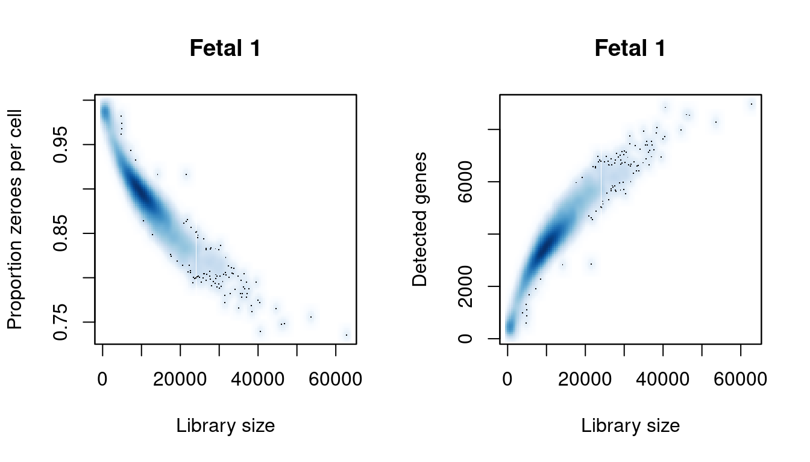
par(mfrow=c(1,3))
plot(density(libsize),main="Distribution of library sizes")
#abline(v=3000,col=2)
plot(density(pz), main="Distribution of proportion of zeroes per cell")
#abline(v=0.95,col=2)
plot(density(numgene), main="Distribution of detected genes per cell")
abline(v=500,col=4, lty=3)
legend("topright",lty=2,col=4,legend="500 genes")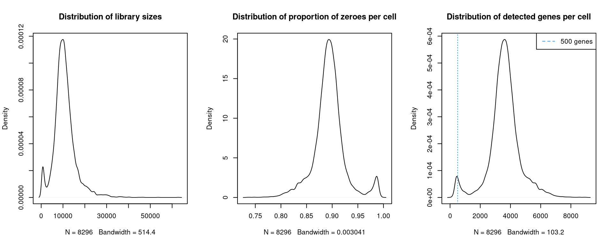
mycol <- rep(1,length(libsize))
mycol[pz>0.95] <- 2par(mfrow=c(1,2))
propmito <- colSums(f1[mito,])/libsize
propribo <- colSums(f1[ribo,])/libsize
plot(libsize,propribo,xlab="Library size",ylab="Proportion ribosomal counts",main="Fetal 1: Ribosomal content",col=mycol)
legend("topright",fill=c(1,2),legend=c("pz <= 0.95","pz > 0.95"))
plot(libsize,propmito,xlab="Library size",ylab="Proportion mitochondrial counts",main="Fetal 1: Mitochondrial content",col=mycol)
legend("topright",fill=c(1,2),legend=c("pz <= 0.95","pz > 0.95"))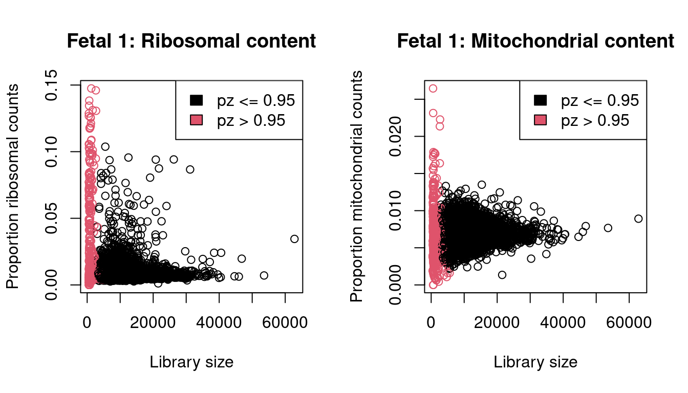
# fetal 2
par(mfrow=c(1,2))
libsize <- colSums(f2)
pz <- colMeans(f2==0)
numgene <- colSums(f2!=0)
find_modes(libsize) [1] 914.8093 8566.1059 19217.9110 28069.4110 31970.0720 34070.4280
[7] 35870.7331 38721.2161 41421.6737 44722.2331 49222.9958 52673.5805
[13] 58224.5212 64825.6398 65275.7161 65725.7924 66475.9195 67376.0720
[19] 67676.1229 68126.1992 69176.3771 69926.5042 70526.6059 74427.2670find_modes(numgene)[1] 468.3299 3223.0165 4543.7567 6826.7504 7449.3850 7656.9299 8109.7551
[8] 9260.6858find_modes(pz)[1] 0.7271373 0.7610491 0.7743914 0.7805066 0.7988523 0.8661199 0.9050350
[8] 0.9862008smoothScatter(libsize,pz,xlab="Library size",ylab="Proportion zeroes per cell",main="Fetal 2")
smoothScatter(libsize,numgene,xlab="Library size",ylab="Detected genes",main="Fetal 2")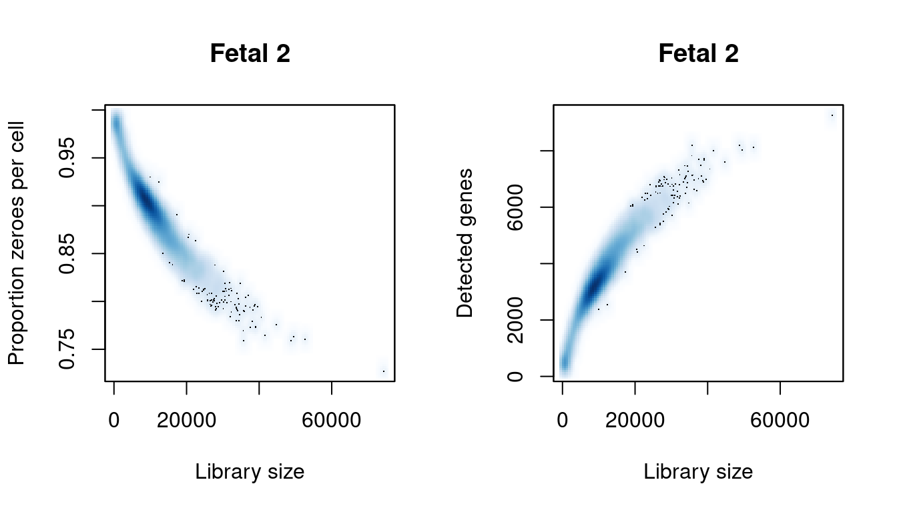
par(mfrow=c(1,3))
plot(density(libsize),main="Distribution of library sizes")
#abline(v=3000,col=2)
plot(density(pz), main="Distribution of proportion of zeroes per cell")
#abline(v=0.95,col=2)
plot(density(numgene), main="Distribution of detected genes per cell")
abline(v=500,col=4, lty=3)
legend("topright",lty=2,col=4,legend="500 genes")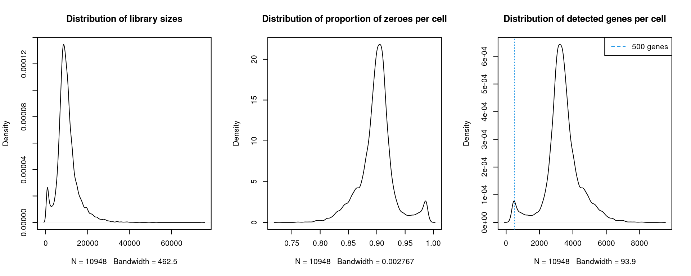
mycol <- rep(1,length(libsize))
mycol[pz>0.95] <- 2
par(mfrow=c(1,2))
propmito <- colSums(f2[mito,])/libsize
propribo <- colSums(f2[ribo,])/libsize
plot(libsize,propribo,xlab="Library size",ylab="Proportion ribosomal counts",main="Fetal 2: Ribosomal content",col=mycol)
legend("topright",fill=c(1,2),legend=c("pz <= 0.95","pz > 0.95"))
plot(libsize,propmito,xlab="Library size",ylab="Proportion mitochondrial counts",main="Fetal 2: Mitochondrial content",col=mycol)
legend("topright",fill=c(1,2),legend=c("pz <= 0.95","pz > 0.95"))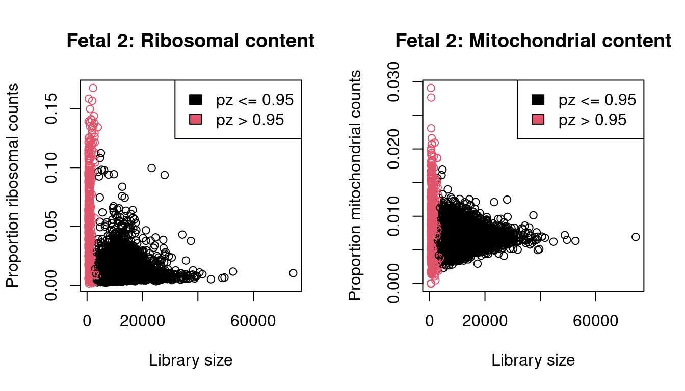
# fetal 3
par(mfrow=c(1,2))
libsize <- colSums(f3)
pz <- colMeans(f3==0)
numgene <- colSums(f3!=0)
find_modes(libsize) [1] 855.0211 13126.2327 35437.5266 39527.9305 47336.8833 49568.0127
[7] 52170.9970 55889.5460 60351.8047 72623.0164 76341.5654 84150.5182
[13] 91029.8338find_modes(numgene)[1] 464.8103 3765.3342 6609.1818 8103.7587 8560.4350 9100.1433 9328.4814
[8] 10138.0439find_modes(pz)[1] 0.7012863 0.7251398 0.7318677 0.7477700 0.7612258 0.8052629 0.8890558
[8] 0.9863045smoothScatter(libsize,pz,xlab="Library size",ylab="Proportion zeroes per cell",main="Fetal 3")
smoothScatter(libsize,numgene,xlab="Library size",ylab="Detected genes",main="Fetal 3")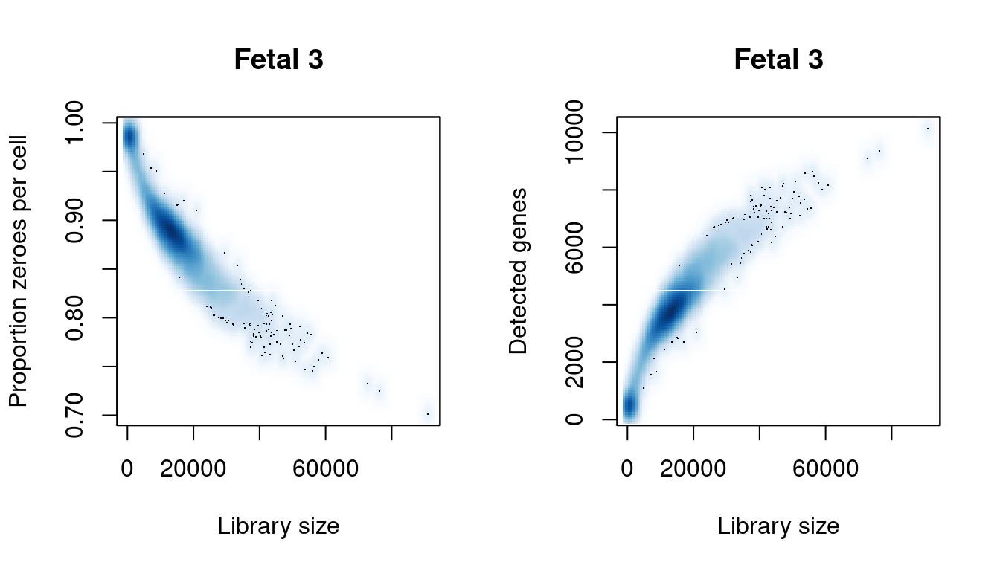
par(mfrow=c(1,3))
plot(density(libsize),main="Distribution of library sizes")
#abline(v=3000,col=2)
plot(density(pz), main="Distribution of proportion of zeroes per cell")
#abline(v=0.95,col=2)
plot(density(numgene), main="Distribution of detected genes per cell")
abline(v=500,col=4, lty=3)
legend("topright",lty=2,col=4,legend="500 genes")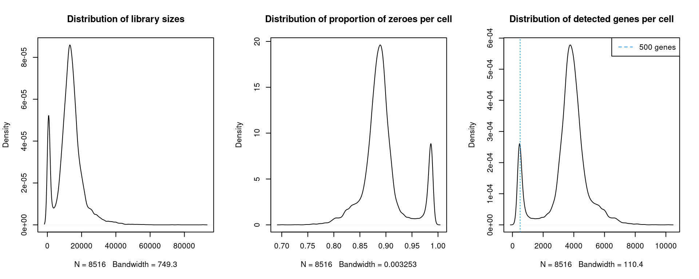
mycol <- rep(1,length(libsize))
mycol[pz>0.95] <- 2
par(mfrow=c(1,2))
propmito <- colSums(f3[mito,])/libsize
propribo <- colSums(f3[ribo,])/libsize
plot(libsize,propribo,xlab="Library size",ylab="Proportion ribosomal counts",main="Fetal 3: Ribosomal content",col=mycol)
legend("topright",fill=c(1,2),legend=c("pz <= 0.95","pz > 0.95"))
plot(libsize,propmito,xlab="Library size",ylab="Proportion mitochondrial counts",main="Fetal 3: Mitochondrial content",col=mycol)
legend("topright",fill=c(1,2),legend=c("pz <= 0.95","pz > 0.95"))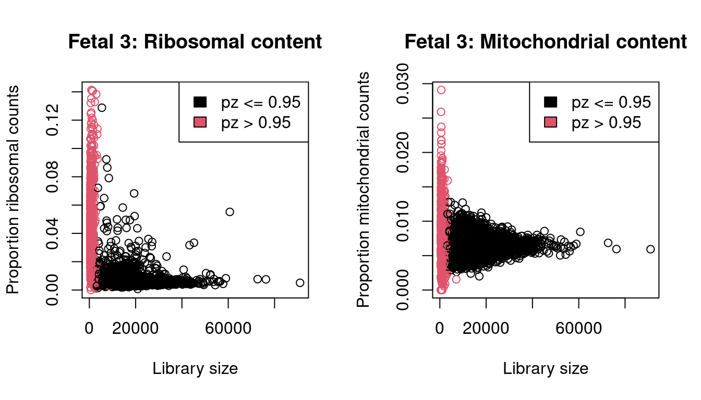
# non-diseased 1
par(mfrow=c(1,2))
libsize <- colSums(nd1)
pz <- colMeans(nd1==0)
numgene <- colSums(nd1!=0)
find_modes(libsize) [1] 1128.536 8307.830 22405.353 25016.005 34283.821 38069.267 39896.723
[8] 43943.234 48250.811 54385.844 55299.572 56604.898 57649.159 63523.127find_modes(numgene)[1] 511.8448 1043.3141 3302.0583 5494.3689 6391.2232 6739.9999 8068.6730find_modes(pz)[1] 0.7622596 0.8014084 0.8116850 0.8381105 0.9027061 0.9692591 0.9849187smoothScatter(libsize,pz,xlab="Library size",ylab="Proportion zeroes per cell",main="non-diseased 1")
smoothScatter(libsize,numgene,xlab="Library size",ylab="Detected genes",main="non-diseased 1")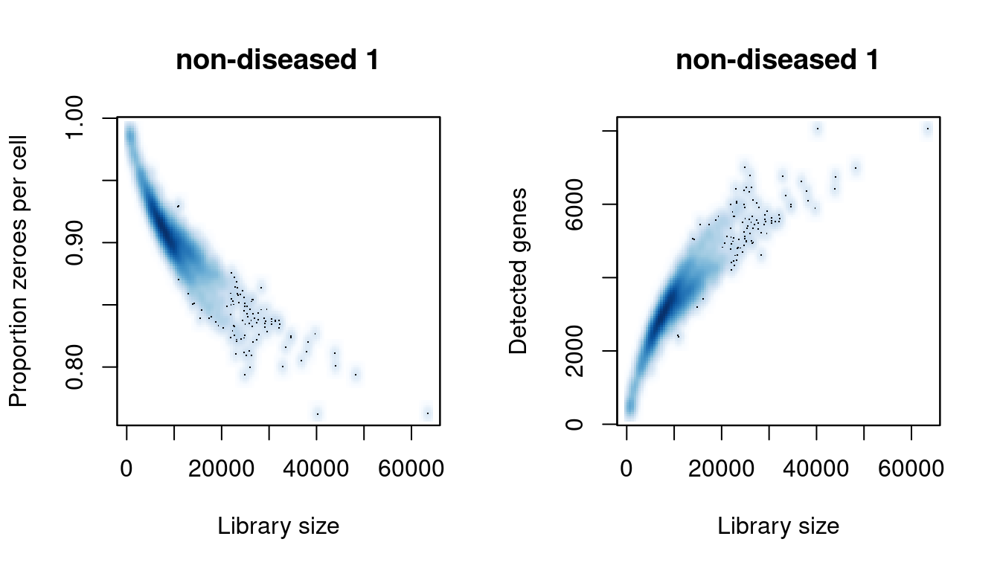
par(mfrow=c(1,3))
plot(density(libsize),main="Distribution of library sizes")
#abline(v=3000,col=2)
plot(density(pz), main="Distribution of proportion of zeroes per cell")
#abline(v=0.95,col=2)
plot(density(numgene), main="Distribution of detected genes per cell")
abline(v=500,col=4, lty=3)
legend("topright",lty=2,col=4,legend="500 genes")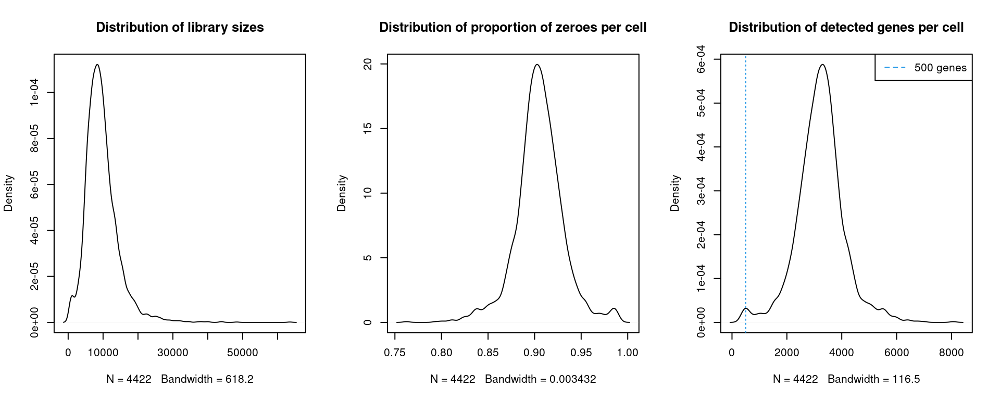
mycol <- rep(1,length(libsize))
mycol[pz>0.95] <- 2
par(mfrow=c(1,2))
propmito <- colSums(nd1[mito,])/libsize
propribo <- colSums(nd1[ribo,])/libsize
plot(libsize,propribo,xlab="Library size",ylab="Proportion ribosomal counts",main="non-diseased 1: Ribosomal content",col=mycol, cex.main = 1)
legend("topright",fill=c(1,2),legend=c("pz <= 0.95","pz > 0.95"))
plot(libsize,propmito,xlab="Library size",ylab="Proportion mitochondrial counts",main="non-diseased 1: Mitochondrial content",col=mycol, cex.main = 1)
legend("topright",fill=c(1,2),legend=c("pz <= 0.95","pz > 0.95"))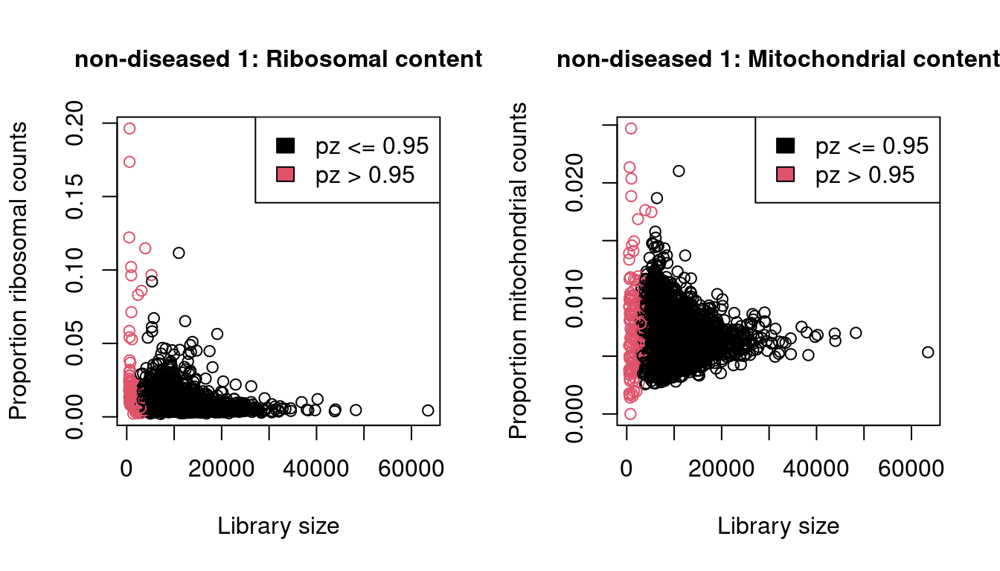
# non-diseased 2
par(mfrow=c(1,2))
libsize <- colSums(nd2)
pz <- colMeans(nd2==0)
numgene <- colSums(nd2!=0)
find_modes(libsize) [1] 6020.806 54822.374 69591.269 76333.591 83396.976 97523.745
[7] 112934.766 118392.836 121282.403 122887.718 123850.907 124814.095
[13] 125777.284 126740.473 128345.788 129308.977 130272.165 131235.354
[19] 132519.606 133161.732 134445.984 135730.235 136693.424 137977.676
[25] 138940.865 139904.054 140546.180 141188.305 143435.746 144077.872
[31] 145041.061 156278.264find_modes(numgene)[1] 3049.700 9748.472 12208.177find_modes(pz)[1] 0.6402906 0.7127649 0.9101417smoothScatter(libsize,pz,xlab="Library size",ylab="Proportion zeroes per cell",main="non-diseased 2")
smoothScatter(libsize,numgene,xlab="Library size",ylab="Detected genes",main="non-diseased 2")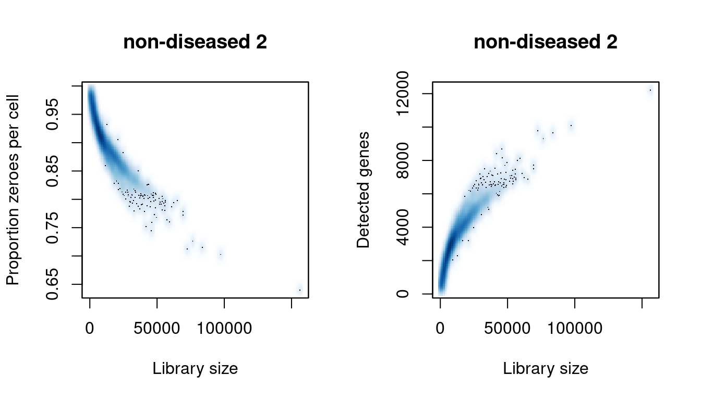
par(mfrow=c(1,3))
plot(density(libsize),main="Distribution of library sizes")
#abline(v=3000,col=2)
plot(density(pz), main="Distribution of proportion of zeroes per cell")
#abline(v=0.95,col=2)
plot(density(numgene), main="Distribution of detected genes per cell")
abline(v=500,col=4, lty=3)
legend("topright",lty=2,col=4,legend="500 genes")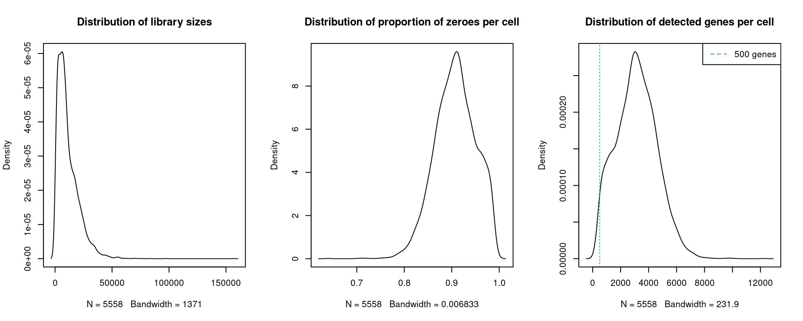
mycol <- rep(1,length(libsize))
mycol[pz>0.95] <- 2
par(mfrow=c(1,2))
propmito <- colSums(nd2[mito,])/libsize
propribo <- colSums(nd2[ribo,])/libsize
plot(libsize,propribo,xlab="Library size",ylab="Proportion ribosomal counts",main="non-diseased 2: Ribosomal content",col=mycol, cex.main = 1)
legend("topright",fill=c(1,2),legend=c("pz <= 0.95","pz > 0.95"))
plot(libsize,propmito,xlab="Library size",ylab="Proportion mitochondrial counts",main="non-diseased 2: Mitochondrial content",col=mycol, cex.main = 1)
legend("topright",fill=c(1,2),legend=c("pz <= 0.95","pz > 0.95"))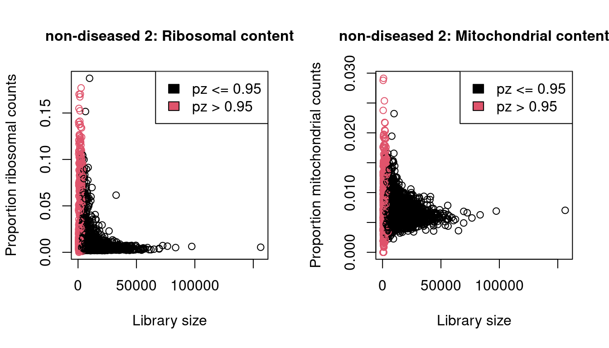
# non-diseased 3
par(mfrow=c(1,2))
libsize <- colSums(nd3)
pz <- colMeans(nd3==0)
numgene <- colSums(nd3!=0)
find_modes(libsize) [1] 1092.059 4834.037 16416.351 19623.761 24791.255 27820.476 30671.507
[8] 33522.538 34948.054 38333.653 45817.610 48668.641 51519.673 54192.514
[15] 57756.303 61498.282 64705.692 67913.102 70051.375 72189.649 75753.438
[22] 81990.068 88048.509find_modes(numgene)[1] 703.5671 2840.3481find_modes(pz)[1] 0.9163102 0.9792697smoothScatter(libsize,pz,xlab="Library size",ylab="Proportion zeroes per cell",main="non-diseased 3")
smoothScatter(libsize,numgene,xlab="Library size",ylab="Detected genes",main="non-diseased 3")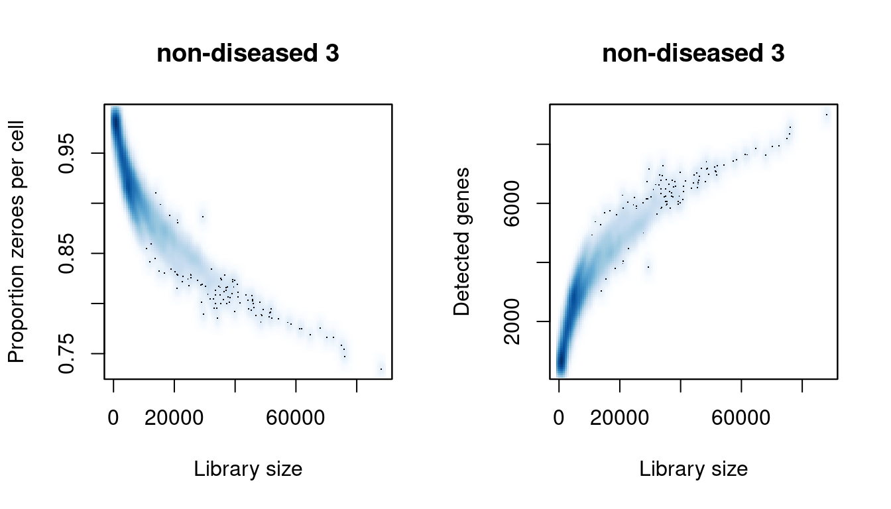
par(mfrow=c(1,3))
plot(density(libsize),main="Distribution of library sizes")
#abline(v=3000,col=2)
plot(density(pz), main="Distribution of proportion of zeroes per cell")
#abline(v=0.95,col=2)
plot(density(numgene), main="Distribution of detected genes per cell")
abline(v=500,col=4, lty=3)
legend("topright",lty=2,col=4,legend="500 genes")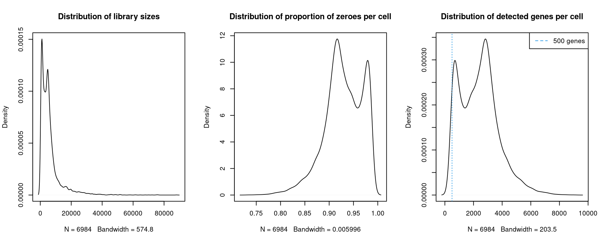
mycol <- rep(1,length(libsize))
mycol[pz>0.95] <- 2
par(mfrow=c(1,2))
propmito <- colSums(nd3[mito,])/libsize
propribo <- colSums(nd3[ribo,])/libsize
plot(libsize,propribo,xlab="Library size",ylab="Proportion ribosomal counts",main="non-diseased 3: Ribosomal content",col=mycol, cex.main = 1)
legend("topright",fill=c(1,2),legend=c("pz <= 0.95","pz > 0.95"))
plot(libsize,propmito,xlab="Library size",ylab="Proportion mitochondrial counts",main="non-diseased 3: Mitochondrial content",col=mycol, cex.main = 1)
legend("topright",fill=c(1,2),legend=c("pz <= 0.95","pz > 0.95"))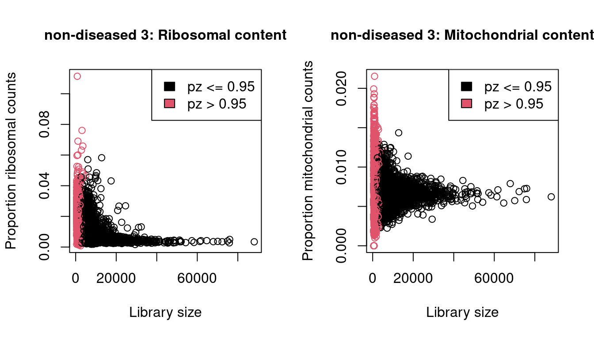
# DCM 1
par(mfrow=c(1,2))
libsize <- colSums(dcm1)
pz <- colMeans(dcm1==0)
numgene <- colSums(dcm1!=0)
find_modes(libsize) [1] 741.9607 1973.8215 8133.1256 9892.9268 11652.7280 12708.6087
[7] 13940.4695 15524.2905 16228.2110 17284.0917 19043.8929 20275.7537
[13] 21507.6145 22387.5151 24499.2765 25907.1175 27490.9385 28546.8192
[19] 29954.6602 31890.4415 32946.3222 34354.1631 35234.0637 38225.7257
[25] 39281.6064 41041.4076 42273.2684 43681.1094 45088.9503 46848.7515
[31] 48960.5129 50192.3737 51776.1948 53008.0556 55295.7971 56703.6381
[37] 58463.4392 58991.3796 60751.1808 64270.7831 66558.5246 67438.4252
[43] 70430.0872 75533.5106 77997.2323 80988.8943 82924.6756 88732.0194find_modes(numgene)[1] 512.4921 1325.6812 4563.6522 5228.9887 5790.8284 6160.4598 6751.8700
[8] 7121.5014find_modes(pz)[1] 0.7901676 0.8010587 0.8184843 0.8293754 0.8459298 0.8655337 0.9609393
[8] 0.9848996smoothScatter(libsize,pz,xlab="Library size",ylab="Proportion zeroes per cell",main="DCM 1")
smoothScatter(libsize,numgene,xlab="Library size",ylab="Detected genes",main="DCM 1")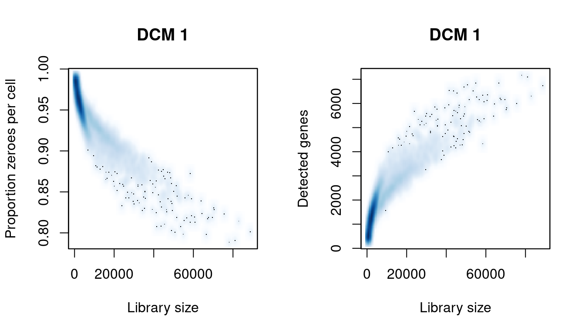
par(mfrow=c(1,3))
plot(density(libsize),main="Distribution of library sizes")
#abline(v=3000,col=2)
plot(density(pz), main="Distribution of proportion of zeroes per cell")
#abline(v=0.95,col=2)
plot(density(numgene), main="Distribution of detected genes per cell")
abline(v=500,col=4, lty=3)
legend("topright",lty=2,col=4,legend="500 genes")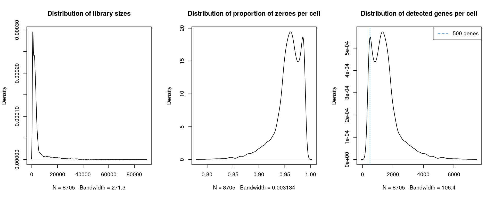
mycol <- rep(1,length(libsize))
mycol[pz>0.95] <- 2
par(mfrow=c(1,2))
propmito <- colSums(dcm1[mito,])/libsize
propribo <- colSums(dcm1[ribo,])/libsize
plot(libsize,propribo,xlab="Library size",ylab="Proportion ribosomal counts",main="DCM 1: Ribosomal content",col=mycol)
legend("topright",fill=c(1,2),legend=c("pz <= 0.95","pz > 0.95"))
plot(libsize,propmito,xlab="Library size",ylab="Proportion mitochondrial counts",main="DCM 1: Mitochondrial content",col=mycol)
legend("topright",fill=c(1,2),legend=c("pz <= 0.95","pz > 0.95"))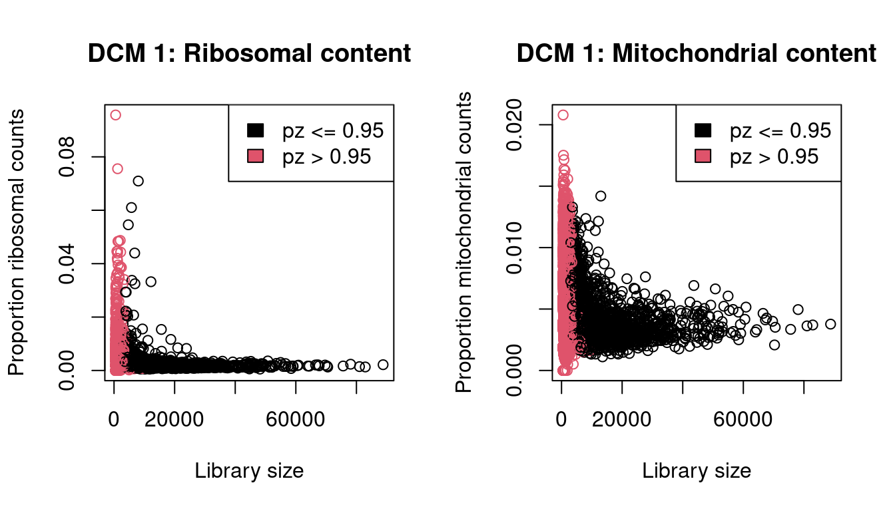
# DCM 2
par(mfrow=c(1,2))
libsize <- colSums(dcm2)
pz <- colMeans(dcm2==0)
numgene <- colSums(dcm2!=0)
find_modes(libsize) [1] 1098.901 3315.519 17881.866 20098.484 21681.783 24215.060
[7] 25798.359 27381.658 28964.956 32131.553 35298.150 37198.109
[13] 39414.727 41314.685 42897.984 46064.581 50181.157 51447.796
[19] 53031.094 56831.011 59047.629 63797.525 65064.164 66647.462
[25] 68864.080 69814.059 72980.656 76147.254 79313.851 80897.149
[31] 82797.108 84697.066 86913.684 88813.642 91980.239 93563.538
[37] 97680.114 99896.732 101796.690 103063.329 106229.926 108129.885
[43] 110663.162 113196.440 115729.718 118896.315 121429.593 125229.509
[49] 126496.148 127129.468 128396.106 129662.745 132196.023 140429.176
[55] 146129.050 155312.182 159745.418find_modes(numgene)[1] 535.0048 2029.4649 6149.9047 6854.4359 8391.5948 10377.0918find_modes(pz)[1] 0.6942429 0.7527448 0.7980366 0.8187953 0.9402026 0.9842363smoothScatter(libsize,pz,xlab="Library size",ylab="Proportion zeroes per cell",main="DCM 2")
smoothScatter(libsize,numgene,xlab="Library size",ylab="Detected genes",main="DCM 2")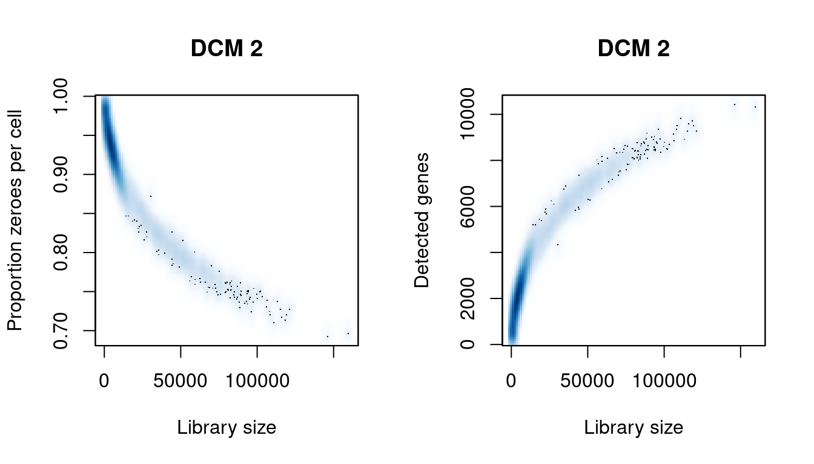
par(mfrow=c(1,3))
plot(density(libsize),main="Distribution of library sizes")
#abline(v=3000,col=2)
plot(density(pz), main="Distribution of proportion of zeroes per cell")
#abline(v=0.95,col=2)
plot(density(numgene), main="Distribution of detected genes per cell")
abline(v=500,col=4, lty=3)
legend("topright",lty=2,col=4,legend="500 genes")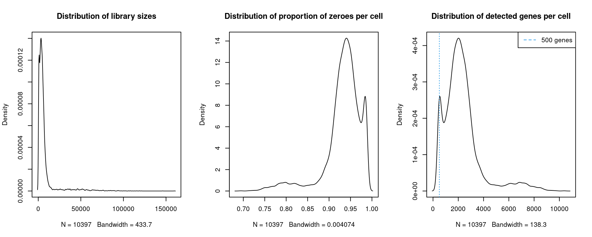
mycol <- rep(1,length(libsize))
mycol[pz>0.95] <- 2
par(mfrow=c(1,2))
propmito <- colSums(dcm2[mito,])/libsize
propribo <- colSums(dcm2[ribo,])/libsize
plot(libsize,propribo,xlab="Library size",ylab="Proportion ribosomal counts",main="DCM 2: Ribosomal content",col=mycol)
legend("topright",fill=c(1,2),legend=c("pz <= 0.95","pz > 0.95"))
plot(libsize,propmito,xlab="Library size",ylab="Proportion mitochondrial counts",main="DCM 2: Mitochondrial content",col=mycol)
legend("topright",fill=c(1,2),legend=c("pz <= 0.95","pz > 0.95"))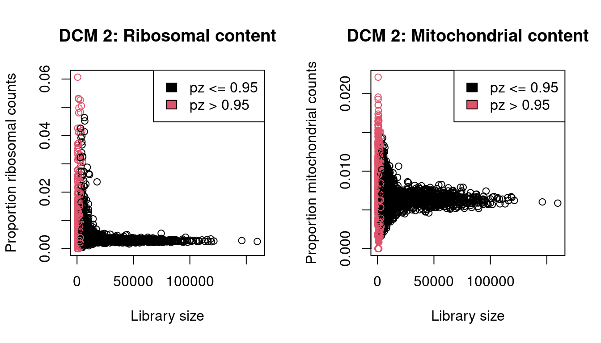
# DCM 3
par(mfrow=c(1,2))
libsize <- colSums(dcm3)
pz <- colMeans(dcm3==0)
numgene <- colSums(dcm3!=0)
find_modes(libsize)[1] 4073.714 15918.699 73959.127 87936.209 94332.501 110204.781find_modes(numgene)[1] 2348.607 4571.828find_modes(pz)[1] 0.8652928 0.9307992smoothScatter(libsize,pz,xlab="Library size",ylab="Proportion zeroes per cell",main="DCM 3")
smoothScatter(libsize,numgene,xlab="Library size",ylab="Detected genes",main="DCM 3")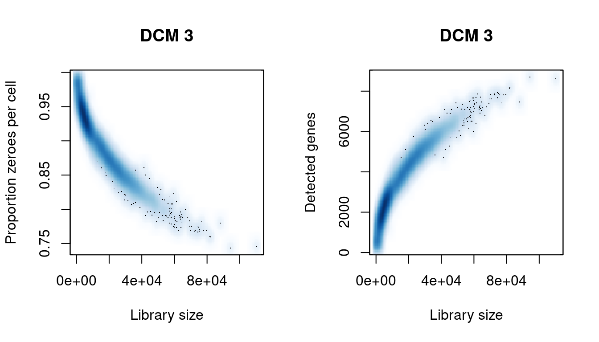
par(mfrow=c(1,3))
plot(density(libsize),main="Distribution of library sizes")
#abline(v=3000,col=2)
plot(density(pz), main="Distribution of proportion of zeroes per cell")
#abline(v=0.95,col=2)
plot(density(numgene), main="Distribution of detected genes per cell")
abline(v=500,col=4, lty=3)
legend("topright",lty=2,col=4,legend="500 genes")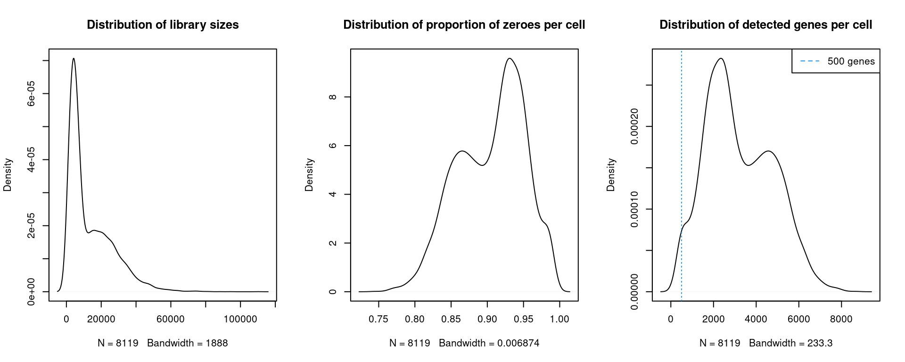
mycol <- rep(1,length(libsize))
mycol[pz>0.95] <- 2
par(mfrow=c(1,2))
propmito <- colSums(dcm3[mito,])/libsize
propribo <- colSums(dcm3[ribo,])/libsize
plot(libsize,propribo,xlab="Library size",ylab="Proportion ribosomal counts",main="DCM 3: Ribosomal content",col=mycol)
legend("topright",fill=c(1,2),legend=c("pz <= 0.95","pz > 0.95"))
plot(libsize,propmito,xlab="Library size",ylab="Proportion mitochondrial counts",main="DCM 3: Mitochondrial content",col=mycol)
legend("topright",fill=c(1,2),legend=c("pz <= 0.95","pz > 0.95"))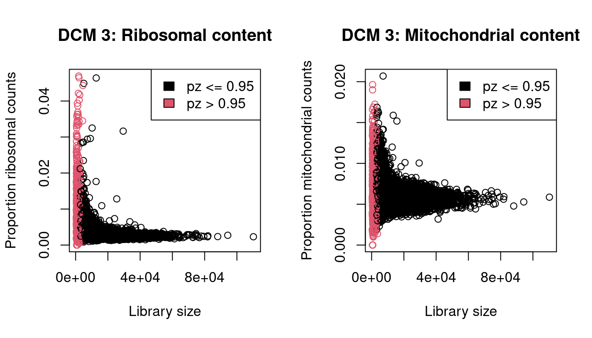
# DCM 4
par(mfrow=c(1,2))
libsize <- colSums(dcm4)
pz <- colMeans(dcm4==0)
numgene <- colSums(dcm4!=0)
find_modes(libsize) [1] 5500.593 19798.398 23264.533 28030.468 30196.802 32796.403
[7] 36262.538 40595.207 49693.810 53593.212 56626.079 60958.748
[13] 63991.616 69190.818 75256.553 81755.556 90420.893 96919.895
[19] 100386.030 108618.100 119016.504 125082.240 134614.110 137213.711
[25] 138513.511 140246.579 143279.447 153244.584 160610.120 161476.654
[31] 162343.187 164076.255 165809.322 167542.389 169275.457 173174.858
[37] 174907.926 178374.060 179240.594 182273.462 187039.397 188772.464
[43] 190505.532 192238.599 193971.666 195271.467 197004.534 198737.602
[49] 199604.135 200470.669 201337.203 202203.736 203936.804 205669.871
[55] 206536.405 207402.938 208269.472 210869.073 218234.609find_modes(numgene)[1] 2249.813 4643.692 5338.689 9972.003 11413.478 12262.919find_modes(pz)[1] 0.6386777 0.6637061 0.7061787 0.8426975 0.8631754 0.9337101smoothScatter(libsize,pz,xlab="Library size",ylab="Proportion zeroes per cell",main="DCM 4")
smoothScatter(libsize,numgene,xlab="Library size",ylab="Detected genes",main="DCM 4")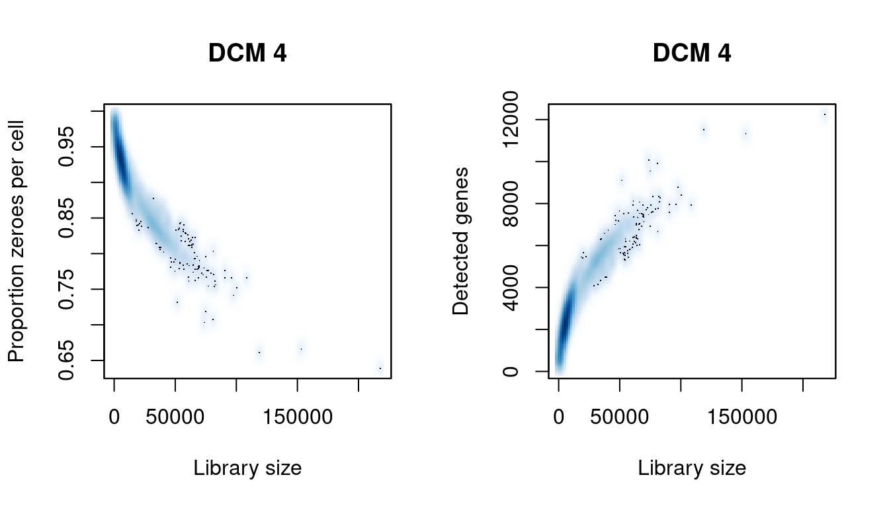
par(mfrow=c(1,3))
plot(density(libsize),main="Distribution of library sizes")
#abline(v=3000,col=2)
plot(density(pz), main="Distribution of proportion of zeroes per cell")
#abline(v=0.95,col=2)
plot(density(numgene), main="Distribution of detected genes per cell")
abline(v=500,col=4, lty=3)
legend("topright",lty=2,col=4,legend="500 genes")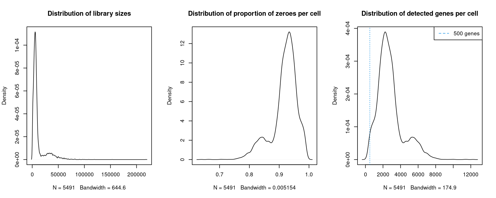
mycol <- rep(1,length(libsize))
mycol[pz>0.95] <- 2
par(mfrow=c(1,2))
propmito <- colSums(dcm4[mito,])/libsize
propribo <- colSums(dcm4[ribo,])/libsize
plot(libsize,propribo,xlab="Library size",ylab="Proportion ribosomal counts",main="DCM 4: Ribosomal content",col=mycol)
legend("topright",fill=c(1,2),legend=c("pz <= 0.95","pz > 0.95"))
plot(libsize,propmito,xlab="Library size",ylab="Proportion mitochondrial counts",main="DCM 4: Mitochondrial content",col=mycol)
legend("topright",fill=c(1,2),legend=c("pz <= 0.95","pz > 0.95"))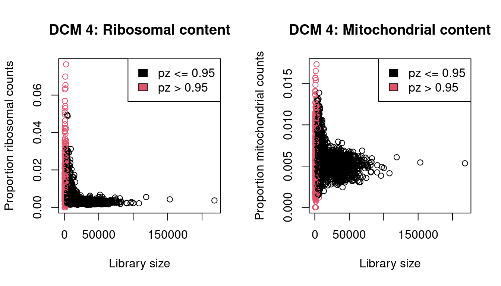
Here I am looking at the library sizes, number of detected genes, first modes of both library size distributions and number of detected genes per cell, as well as numbers of cells for each sample. This will help highlight if any of the samples look vastly different to the others in the dataset.
libmode <- rep(NA,10)
numgmode <- rep(NA,10)
numcells <- rep(NA,10)
names(libmode) <- names(numgmode) <- names(numcells) <- c("fetal_1","fetal_2","fetal_3",
"non-diseased_1","non-diseased_2","non-diseased_3",
"DCM_1","DCM_2",
"DCM_3","DCM_4")
mylibs <- mynumg <- vector("list", 10)
mylibs[[1]] <- colSums(f1)
mynumg[[1]] <- colSums(f1!=0)
numcells[1] <- ncol(f1)
libmode[1] <- find_modes(mylibs[[1]])[1]
numgmode[1] <- find_modes(mynumg[[1]])[1]
mylibs[[2]] <- colSums(f2)
mynumg[[2]] <- colSums(f2!=0)
numcells[2] <- ncol(f2)
libmode[2] <- find_modes(mylibs[[2]])[1]
numgmode[2] <- find_modes(mynumg[[2]])[1]
mylibs[[3]] <- colSums(f3)
mynumg[[3]] <- colSums(f3!=0)
libmode[3] <- find_modes(mylibs[[3]])[1]
numgmode[3] <- find_modes(mynumg[[3]])[1]
numcells[3] <- ncol(f3)
mylibs[[4]] <- colSums(nd1)
mynumg[[4]] <- colSums(nd1!=0)
libmode[4] <- find_modes(mylibs[[4]])[1]
numgmode[4] <- find_modes(mynumg[[4]])[1]
numcells[4] <- ncol(nd1)
mylibs[[5]] <- colSums(nd2)
mynumg[[5]] <- colSums(nd2!=0)
libmode[5] <- find_modes(mylibs[[5]])[1]
numgmode[5] <- find_modes(mynumg[[5]])[1]
numcells[5] <- ncol(nd2)
mylibs[[6]] <- colSums(nd3)
mynumg[[6]] <- colSums(nd3!=0)
libmode[6] <- find_modes(mylibs[[6]])[1]
numgmode[6] <- find_modes(mynumg[[6]])[1]
numcells[6] <- ncol(nd3)
mylibs[[7]] <- colSums(dcm1)
mynumg[[7]] <- colSums(dcm1!=0)
libmode[7] <- find_modes(mylibs[[7]])[1]
numgmode[7] <- find_modes(mynumg[[7]])[1]
numcells[7] <- ncol(dcm1)
mylibs[[8]] <- colSums(dcm2)
mynumg[[8]] <- colSums(dcm2!=0)
libmode[8] <- find_modes(mylibs[[8]])[1]
numgmode[8] <- find_modes(mynumg[[8]])[1]
numcells[8] <- ncol(dcm2)
mylibs[[9]] <- colSums(dcm3)
mynumg[[9]] <- colSums(dcm3!=0)
libmode[9] <- find_modes(mylibs[[9]])[1]
numgmode[9] <- find_modes(mynumg[[9]])[1]
numcells[9] <- ncol(dcm3)
mylibs[[10]] <- colSums(dcm4)
mynumg[[10]] <- colSums(dcm4!=0)
libmode[10] <- find_modes(mylibs[[10]])[1]
numgmode[10] <- find_modes(mynumg[[10]])[1]
numcells[10] <- ncol(dcm4)par(mar=c(8,4,2,2))
mycols <- rep(ggplotColors(4),c(3,3,3,4))
barplot(numcells,col=mycols,las=2,main="Number of cells per sample")
abline(h=100,lty=2,lwd=2)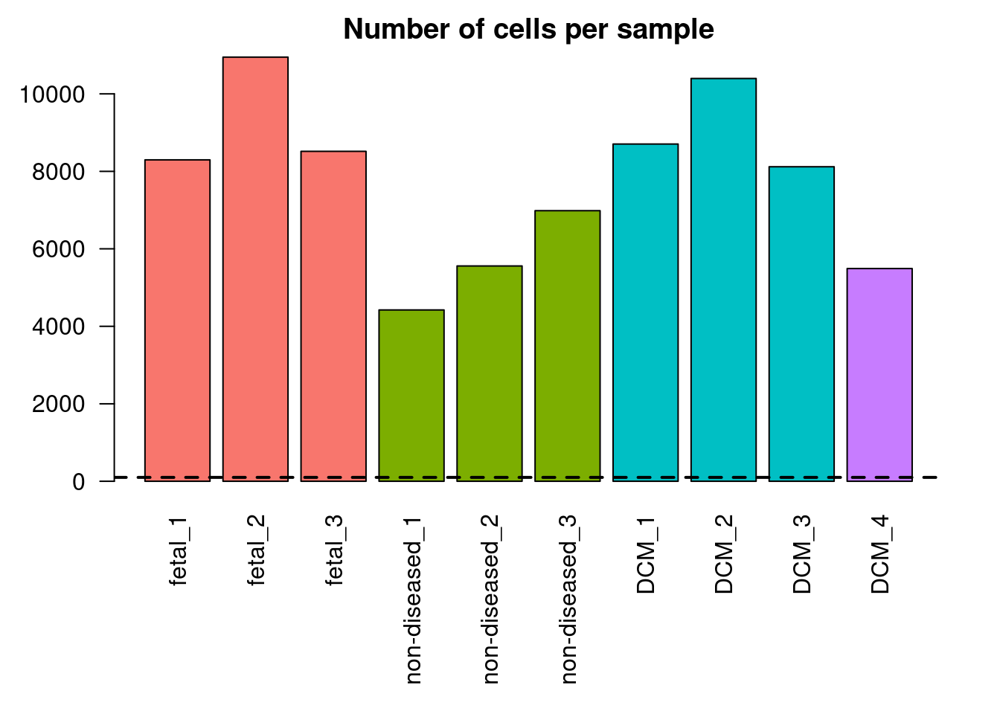
plot(density(mylibs[[1]]),lwd=2,col=mycols[1],ylim=c(0,0.0003),main="Library size distributions")
for(i in 2:10) lines(density(mylibs[[i]]),lwd=2,col=mycols[i])
legend("topright",legend=c("fetal","non-diseased","DCM"),fill=ggplotColors(4))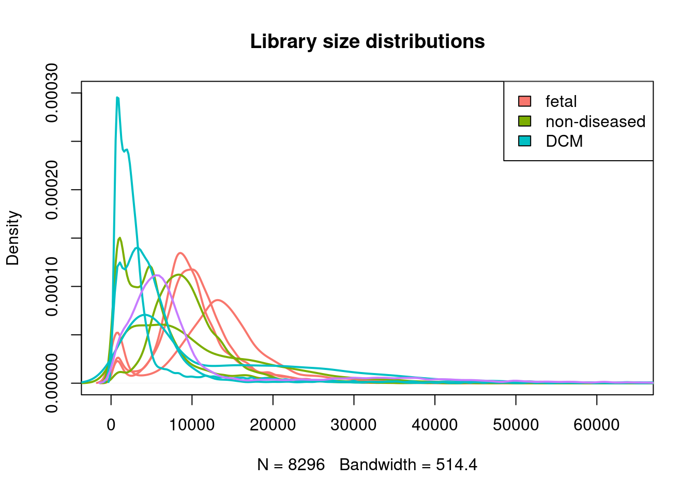
#abline(v=1000,lty=2,lwd=2)par(mfrow=c(1,1))
par(mar=c(8,4,2,2))
boxplot(mylibs,col=mycols,names=names(libmode),las=2, main="Library size distributions",ylim=c(0,150000))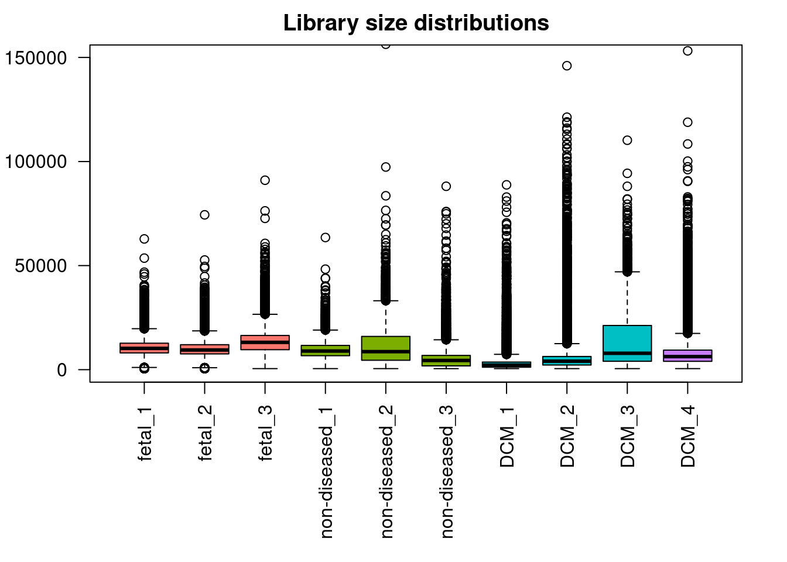
boxplot(mylibs,col=ggplotColors(2)[factor(targets$Batch)],names=names(libmode),las=2, main="Library size distributions by batch",ylim=c(0,150000))
legend("topleft",fill=ggplotColors(2),legend=levels(factor(targets$Batch)))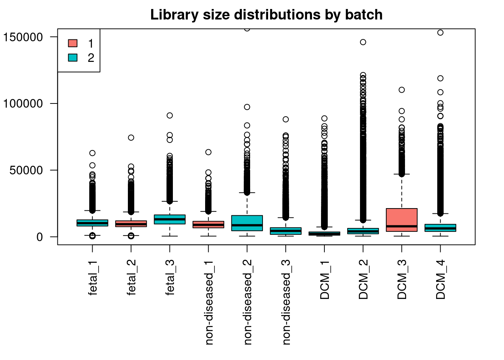
plot(density(mynumg[[1]]),lwd=2,col=mycols[1],ylim=c(0,0.0007),main="Number of genes detected distributions")
for(i in 2:10) lines(density(mynumg[[i]]),lwd=2,col=mycols[i])
legend("topright",legend=c("Fetal","non-diseased","DCM"),fill=ggplotColors(4))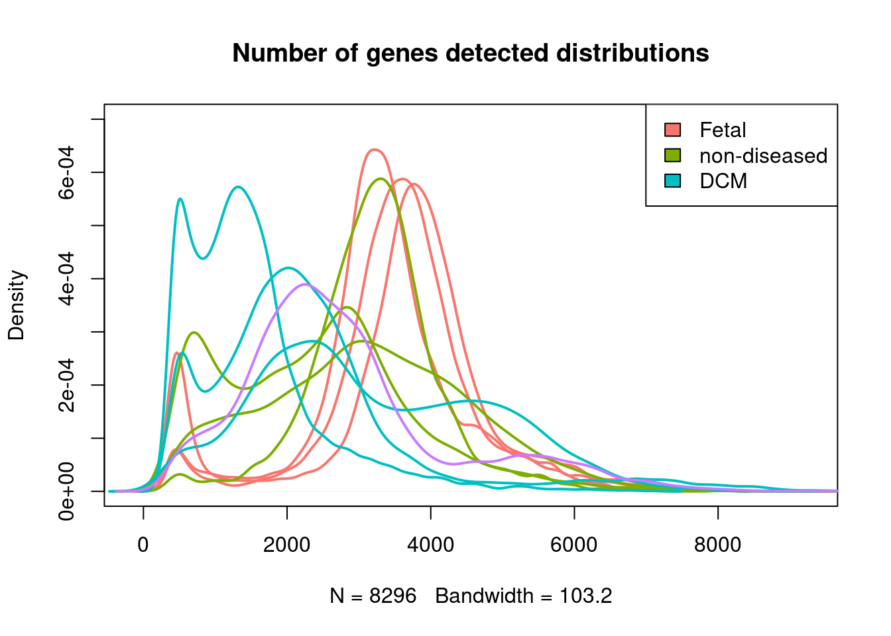
par(mfrow=c(1,1))
par(mar=c(8,4,2,2))
boxplot(mynumg,col=mycols,names=names(libmode),las=2, main="Number of genes detected")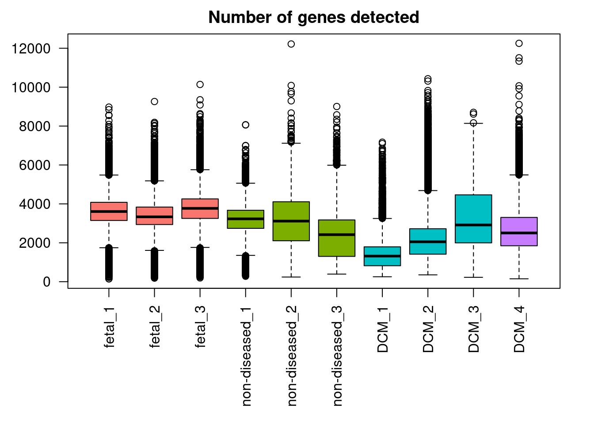
boxplot(mynumg,col=ggplotColors(2)[factor(targets$Batch)],names=names(libmode),las=2, main="Number of genes detected by batch")
legend("topleft",fill=ggplotColors(2),legend=levels(factor(targets$Batch)))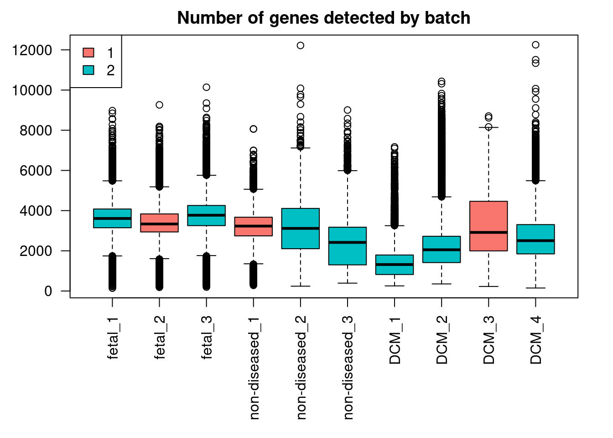
par(mar=c(8,4,2,2))
barplot(libmode,col=mycols,las=2)
title("First mode: library size distributions")
abline(h=1000,lty=2,lwd=2)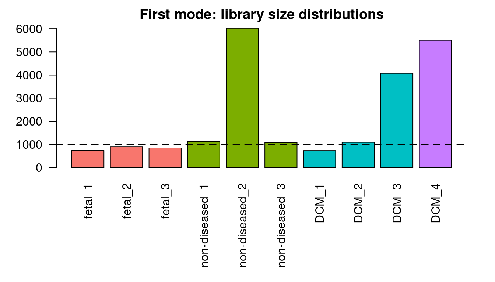
barplot(numgmode,col=mycols,las=2)
title("First mode: number of genes detected distributions")
abline(h=500,lty=2,lwd=2)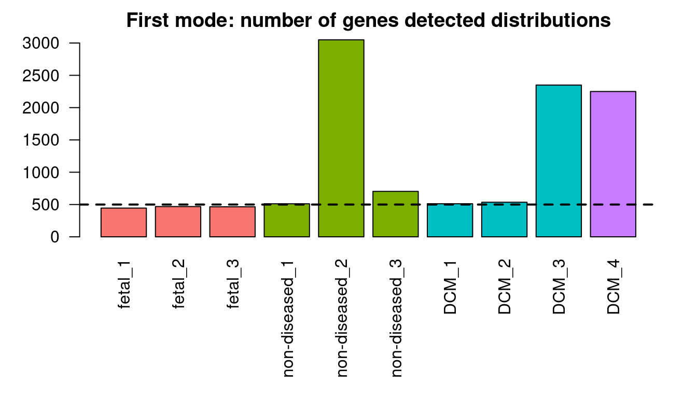
To get a high-level idea of the overall sources of variability in the dataset, I have summed the counts over all cells within a sample to obtain a “pseudobulk” sample and made MDS plots using functions in edgeR.
pseudobulk <- matrix(NA,ncol=10,nrow=nrow(f1))
colnames(pseudobulk) <- group
rownames(pseudobulk) <- rownames(f1)
pseudobulk[,1] <- rowSums(f1)
pseudobulk[,2] <- rowSums(f2)
pseudobulk[,3] <- rowSums(f3)
pseudobulk[,4] <- rowSums(nd1)
pseudobulk[,5] <- rowSums(nd2)
pseudobulk[,6] <- rowSums(nd3)
pseudobulk[,7] <- rowSums(dcm1)
pseudobulk[,8] <- rowSums(dcm2)
pseudobulk[,9] <- rowSums(dcm3)
pseudobulk[,10] <- rowSums(dcm4)y <- DGEList(pseudobulk)
# Add annotation
dim(ann)[1] 33939 5table(rownames(y) %in% ann$SYMBOL)
TRUE
33939 m <- match(rownames(y),ann$SYMBOL)
y$genes <- ann[m,]
#saveRDS(y,file="./data/pseudobulk.Rds")keep <- rowSums(y$counts)>10
#keep <- rowSums(cpm.DGEList(y)>=0.5)>=3
table(keep)keep
FALSE TRUE
6051 27888 y.keep <- y[keep,]par(mfrow=c(1,1))
par(mar=c(4,4,2,2))
plotMDS(y.keep,col=ggplotColors(4)[factor(targets$Group)])
legend("bottom",fill=ggplotColors(4),legend=levels(factor(targets$Group)),bty="n")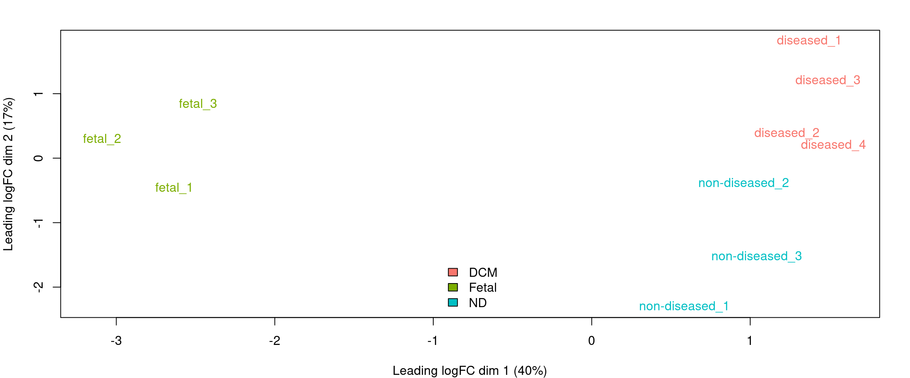
sessionInfo()R version 4.1.2 (2021-11-01)
Platform: x86_64-pc-linux-gnu (64-bit)
Running under: CentOS Linux 7 (Core)
Matrix products: default
BLAS: /hpc/software/installed/R/4.1.2/lib64/R/lib/libRblas.so
LAPACK: /hpc/software/installed/R/4.1.2/lib64/R/lib/libRlapack.so
locale:
[1] LC_CTYPE=en_US.UTF-8 LC_NUMERIC=C
[3] LC_TIME=en_US.UTF-8 LC_COLLATE=en_US.UTF-8
[5] LC_MONETARY=en_US.UTF-8 LC_MESSAGES=en_US.UTF-8
[7] LC_PAPER=en_US.UTF-8 LC_NAME=C
[9] LC_ADDRESS=C LC_TELEPHONE=C
[11] LC_MEASUREMENT=en_US.UTF-8 LC_IDENTIFICATION=C
attached base packages:
[1] stats4 stats graphics grDevices utils datasets methods
[8] base
other attached packages:
[1] NMF_0.23.0 bigmemory_4.5.36
[3] cluster_2.1.2 rngtools_1.5.2
[5] pkgmaker_0.32.2 registry_0.5-1
[7] scran_1.22.1 scuttle_1.4.0
[9] SingleCellExperiment_1.16.0 SummarizedExperiment_1.24.0
[11] GenomicRanges_1.46.1 GenomeInfoDb_1.30.1
[13] DelayedArray_0.20.0 MatrixGenerics_1.6.0
[15] matrixStats_0.61.0 Matrix_1.4-0
[17] cowplot_1.1.1 SeuratObject_4.0.4
[19] Seurat_4.1.0 org.Hs.eg.db_3.14.0
[21] AnnotationDbi_1.56.2 IRanges_2.28.0
[23] S4Vectors_0.32.3 Biobase_2.54.0
[25] BiocGenerics_0.40.0 RColorBrewer_1.1-2
[27] edgeR_3.36.0 limma_3.50.1
[29] workflowr_1.7.0
loaded via a namespace (and not attached):
[1] utf8_1.2.2 reticulate_1.24
[3] tidyselect_1.1.2 RSQLite_2.2.10
[5] htmlwidgets_1.5.4 grid_4.1.2
[7] BiocParallel_1.28.3 Rtsne_0.15
[9] munsell_0.5.0 ScaledMatrix_1.2.0
[11] codetools_0.2-18 ica_1.0-2
[13] statmod_1.4.36 future_1.24.0
[15] miniUI_0.1.1.1 withr_2.4.3
[17] spatstat.random_2.1-0 colorspace_2.0-3
[19] highr_0.9 knitr_1.37
[21] rstudioapi_0.13 ROCR_1.0-11
[23] tensor_1.5 listenv_0.8.0
[25] git2r_0.29.0 GenomeInfoDbData_1.2.7
[27] polyclip_1.10-0 bit64_4.0.5
[29] rprojroot_2.0.2 parallelly_1.30.0
[31] vctrs_0.3.8 generics_0.1.2
[33] xfun_0.29 doParallel_1.0.17
[35] R6_2.5.1 rsvd_1.0.5
[37] locfit_1.5-9.4 bitops_1.0-7
[39] spatstat.utils_2.3-0 cachem_1.0.6
[41] assertthat_0.2.1 promises_1.2.0.1
[43] scales_1.1.1 gtable_0.3.0
[45] beachmat_2.10.0 globals_0.14.0
[47] processx_3.5.2 goftest_1.2-3
[49] rlang_1.0.1 splines_4.1.2
[51] lazyeval_0.2.2 spatstat.geom_2.3-2
[53] yaml_2.3.5 reshape2_1.4.4
[55] abind_1.4-5 httpuv_1.6.5
[57] tools_4.1.2 gridBase_0.4-7
[59] ggplot2_3.3.5 ellipsis_0.3.2
[61] spatstat.core_2.4-0 jquerylib_0.1.4
[63] ggridges_0.5.3 Rcpp_1.0.8
[65] plyr_1.8.6 sparseMatrixStats_1.6.0
[67] zlibbioc_1.40.0 purrr_0.3.4
[69] RCurl_1.98-1.6 ps_1.6.0
[71] rpart_4.1.16 deldir_1.0-6
[73] pbapply_1.5-0 zoo_1.8-9
[75] ggrepel_0.9.1 fs_1.5.2
[77] magrittr_2.0.2 data.table_1.14.2
[79] scattermore_0.8 lmtest_0.9-39
[81] RANN_2.6.1 whisker_0.4
[83] fitdistrplus_1.1-6 patchwork_1.1.1
[85] mime_0.12 evaluate_0.15
[87] xtable_1.8-4 gridExtra_2.3
[89] compiler_4.1.2 tibble_3.1.6
[91] KernSmooth_2.23-20 crayon_1.5.0
[93] htmltools_0.5.2 mgcv_1.8-39
[95] later_1.3.0 tidyr_1.2.0
[97] DBI_1.1.2 MASS_7.3-55
[99] cli_3.2.0 parallel_4.1.2
[101] metapod_1.2.0 igraph_1.2.11
[103] bigmemory.sri_0.1.3 pkgconfig_2.0.3
[105] getPass_0.2-2 plotly_4.10.0
[107] spatstat.sparse_2.1-0 foreach_1.5.2
[109] bslib_0.3.1 dqrng_0.3.0
[111] XVector_0.34.0 stringr_1.4.0
[113] callr_3.7.0 digest_0.6.29
[115] sctransform_0.3.3 RcppAnnoy_0.0.19
[117] spatstat.data_2.1-2 Biostrings_2.62.0
[119] rmarkdown_2.12.1 leiden_0.3.9
[121] uwot_0.1.11 DelayedMatrixStats_1.16.0
[123] shiny_1.7.1 lifecycle_1.0.1
[125] nlme_3.1-155 jsonlite_1.8.0
[127] BiocNeighbors_1.12.0 viridisLite_0.4.0
[129] fansi_1.0.2 pillar_1.7.0
[131] lattice_0.20-45 KEGGREST_1.34.0
[133] fastmap_1.1.0 httr_1.4.2
[135] survival_3.3-0 glue_1.6.2
[137] iterators_1.0.14 png_0.1-7
[139] bluster_1.4.0 bit_4.0.4
[141] stringi_1.7.6 sass_0.4.0
[143] blob_1.2.2 BiocSingular_1.10.0
[145] memoise_2.0.1 dplyr_1.0.8
[147] irlba_2.3.5 future.apply_1.8.1